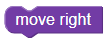
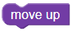
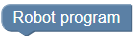
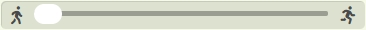

Program the robot:
The robot must reach the red flag  without running into obstacles
without running into obstacles  . You must not use more than six blocks.
. You must not use more than six blocks.
Use the blocks

and
and combine them under
. Finally click to run your program.This button starts the program.
This button resets the robot.
This button goes through the program step by step.
This button jumps to the end of the program and shows the final result.

This slider sets the tempo of the robot.Um den Roboter zu bewegen verwenden wir Funktionen, die uns zur Verfügung gestellt werden. Jeder Befehl muss in einer eigenen Zeile stehen. In der ersten Zeile muss immer stehen:
from robot import *Hier stehen uns die folgenden Funktionen (erkennbar an den runden Klammern) zur Verfügung:
rechts() : bewegt den Roboter einen Schritt nach rechts
oben() : bewegt den Roboter einen Schritt nach oben